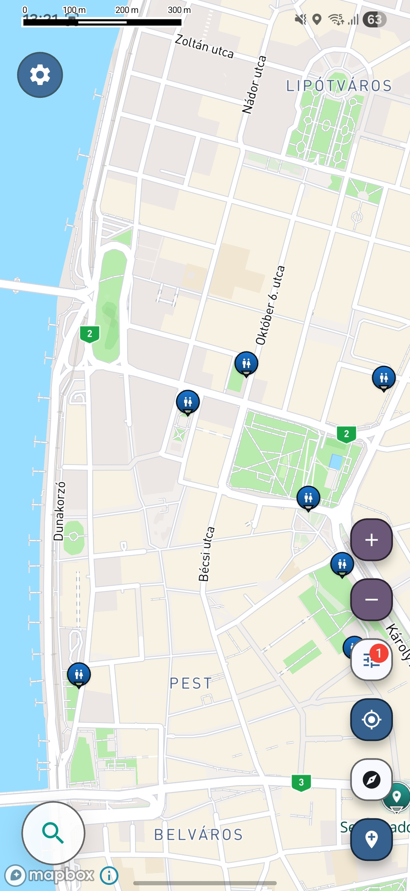

Travel utility map
Find public toilets anywhere
When you need a restroom quickly, standard map results are often incomplete, outdated, or buried under irrelevant places.

Screenshot from the Voyager Maps app showing nearby public toilet locations.
Why toilet access is still a travel problem
- Public toilets are not always properly mapped, especially in stations, parks, city centers, and roadside stops.
- Urgent situations leave no time to compare scattered search results or guess which place actually has a restroom.
- Travelers, families, and drivers often need the nearest practical option, not a long list of unrelated businesses.
Built for practical restroom access on the move
The app focuses on utility first, helping travelers find curated locations that solve real needs quickly. It is designed around practical places that are often overlooked on large, generic maps.
Useful restroom points collected to reduce guesswork in unfamiliar places.
Helpful when you are between stops, arriving in a city, or trying to keep a trip moving smoothly.
Highlights public toilets and similar utility stops that many map apps do not surface clearly.
Find more locations nearby
See the full map for more restroom locations around your current area.
Public toilet map for travel, city breaks, and road stops
A reliable public toilet map is one of the most practical travel tools you can have. When you are in a new city, on a long drive, or moving through train stations and tourist areas, finding a restroom should be simple. In reality, public toilet locations are often inconsistent across standard map apps, and the nearest useful option is not always easy to identify from normal search results.
This page is built for people searching for a public toilet map that works better for real movement. Instead of treating restrooms like a secondary detail, the goal is to make public toilets easier to discover when timing matters. That can mean locating a public restroom before a long transfer, finding toilets near busy attractions, or identifying practical stops while driving. For travelers, families, and everyday city use, better restroom discovery reduces stress and helps trips run more smoothly.